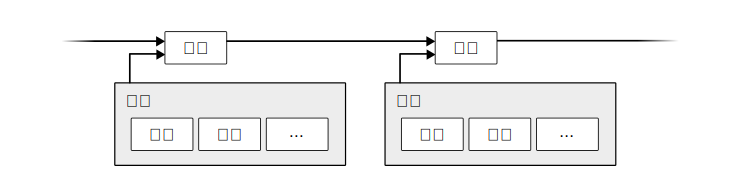
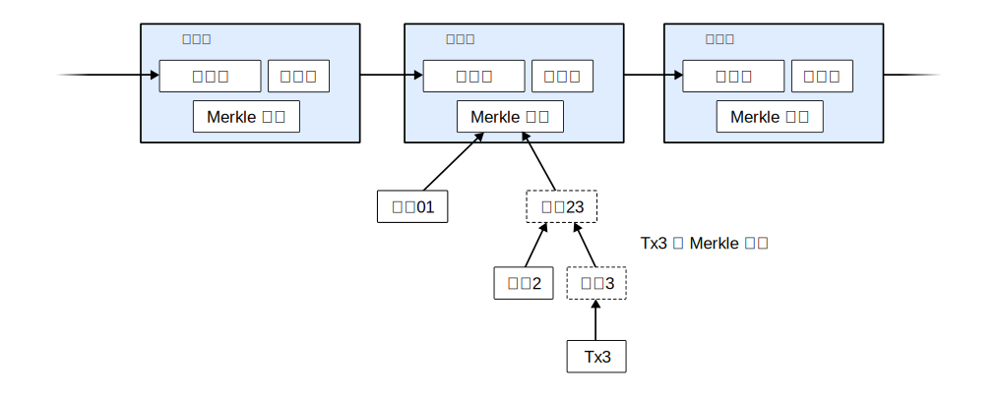
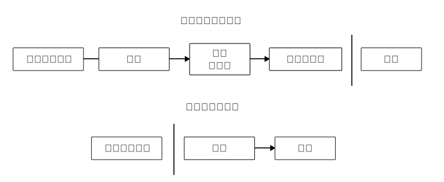

比特币：一种点对点的电子现金系统
作者：中本聪
satoshin@gmx.com
www.bitcoin.org
2008.10.31
中文翻译：李笑来
lixiaolai@gmail.com
2018.10.31
概要：一个纯粹的点对点版本的电子现金系统，将允许在线支付直接从一方发送到另一方，而无需通过金融机构。数字签名虽然提供了部分解决方案，但，若是仍然需要被信任的第三方来防止双重支出的话，那么电子支付的主要优势就被抵消了。我们提出一个方案，使用点对点网络去解决双重支出问题。点对点网络将为每笔交易标记时间戳，方法是：把交易的散列数据录入一个不断延展的、以散列为基础的工作证明链上，形成一个如非完全重做就不可能改变的记录。最长链，一方面用来证明已被见证的事件及其顺序，与此同时，也用来证明它来自于最大的 CPU 算力池。只要绝大多数 CPU 算力被良性节点控制 —— 即，它们不与那些尝试攻击网络的节点合作 —— 那么，良性节点将会生成最长链，并且在速度上超过攻击者。这个网络本身需要最小化的结构。信息将以最大努力为基本去传播，节点来去自由；但，加入之时总是需要接受最长的工作证明链作为它们未参与期间所发生之一切的证明。
1. 简介
互联网商业几乎完全依赖金融机构作为可信第三方去处理电子支付。虽然针对大多数交易来说，这个系统还算不错，但，它仍然被基于信任的模型所固有的缺陷所拖累。完全不可逆转的交易实际上并不可能，因为金融机构不能避免仲裁争议。仲裁成本增加了交易成本，进而限制了最小可能交易的规模，且干脆阻止了很多小额支付交易。除此之外，还有更大的成本：系统无法为那些不可逆的服务提供不可逆的支付。逆转的可能性，造成了对于信任的需求无所不在。商家必须提防着他们的顾客，麻烦顾客提供若非如此（如若信任）就并不必要的更多信息。一定比例的欺诈，被认为是不可避免的。这些成本和支付不确定性，虽然在人与人之间直接使用物理货币支付的时候是可以避免的；但，没有任何一个机制能在双方在其中一方不被信任的情况下通过沟通渠道进行支付。
我们真正需要的是一种基于加密证明而非基于信任的电子支付系统，允许任意双方在不需要信任第三方的情况下直接交易。算力保障的不可逆转交易能帮助卖家不被欺诈，而保护买家的日常担保机制也很容易实现。在本论文中，我们将提出一种针对双重支出的解决方案，使用点对点的、分布式的时间戳服务器去生成基于算力的证明，按照时间顺序记录每条交易。此系统是安全的，只要诚实节点总体上相对于相互合作的攻击者掌握更多的 CPU 算力。
2. 交易
我们将一个电子硬币定义为一个数字签名链。一位所有者将一枚硬币交给另一个人的时候，要通过在这个数字签名链的末尾附加上以下数字签名：上一笔交易的哈希（hash，音译，亦翻译为“散列值”），以及新所有者的公钥。收款人可以通过验证签名去验证数字签名链的所属权。

这个路径的问题在于收款人无法验证曾经的所有者之中没有人双重支付过。常见的解决方案是引入一个可信的中心化权威方，或称“铸币厂”，让它去检查每一笔交易是否存在双重支付。每一次发生交易之后，硬币必须返回到铸币厂，铸币厂再发行一枚新的硬币。进而，只有铸币厂直接发行的硬币才是可信的、未被双重支付过的。这个解决方案的问题在于，整个货币系统的命运被拴在运营铸币厂的那个公司（就好像银行那样）身上，每一笔交易必须通过它。
我们需要一种方式，可以让收款人确认之前的所有者并没有在任何之前的交易上签名。就我们的目的而言，只有最早的交易是算数的，所以，我们并不关心其后的双重支付企图。确认一笔交易不存在的唯一方法是获悉所有的交易。在铸币厂模型之中，铸币厂已然知悉所有的交易，并且能够确认这些交易的顺序。为了能在没有“被信任的一方”参与的情况下完成以上任务，交易记录必须被公开宣布[1]，进而我们需要一个系统能让参与者们认同它们所接收到的同一个唯一的交易历史。收款人需要证明在每笔交易发生之时，大多数节点能够认同它是第一个被接收的。
3. 时间戳服务器
本解决方案起步于一种时间戳服务器。时间戳服务器是这样工作的：为一组（block）记录（items）的哈希打上时间戳，而后把哈希广播出去，就好像一份报纸所做的那样，或者像是在新闻组（Usenet）里的一个帖子那样[2-5]。显然，时间戳能够证明那数据在那个时间点之前已然存在，否则那哈希也就无法生成。每个时间戳在其哈希中包含着之前的时间戳，因此构成了一个链；每一个新的时间戳被添加到之前的时间戳之后。

4. 工作证明
为了实现一个基于点对点的分布式时间戳服务器，我们需要使用类似亚当·伯克的哈希现金那样的一个工作证明系统，而不是报纸或者新闻组帖子那样的东西。所谓的工作证明，就是去寻找一个数值；这个数值要满足以下条件：为它提取散列数值之后 —— 例如使用 SHA-256 计算散列数值 —— 这个散列数值必须以一定数量的 0 开头。每增加一个 0 的要求，将使得工作量指数级增加，并且，这个工作量的验证却只需通过计算一个哈希。
在我们的时间戳网络中，我们是这样实现工作证明的：不断在区块之中增加一个随机数（Nonce），直到一个满足条件的数值被找到；这个条件就是，这个区块的哈希以指定数量的 0 开头。一旦 CPU 的耗费算力所获的的结果满足工作证明，那么这个区块将不再能被更改，除非重新完成之前的所有工作量。随着新的区块不断被添加进来，改变当前区块即意味着说要重新完成所有其后区块的工作。

工作证明同时解决了如何决定谁能代表大多数做决定的问题。如果所谓的“大多数”是基于“一个IP地址一票”的方式决定的话，那么任何一个可以搞定很多 IP 地址的人就可以被认为是“大多数”。工作证明本质上来看，是“一个CPU一票”。所谓的“大多数决定”是由最长链所代表的，因为被投入最多工作的链就是它。如果大多数 CPU 算力被诚实的节点所控制，那么诚实链成长最为迅速，其速度会远超其他竞争链。为了更改一个已经产生的区块，攻击者将不得不重新完成那个区块以及所有其后区块的的工作证明，而后还要追上并超过诚实节点的工作。后文展示为什么一个被拖延了的攻击者能够追上的可能性将随着区块的不断增加而指数级降低。
为了应对硬件算力综合的不断增加，以及随着时间推进可能产生的节点参与数量变化，工作证明难度由此决定：基于平均每小时产生的区块数量的一个移动平均值。如果区块生成得过快，那么难度将会增加。
5. 网络
运行网络的步骤如下：
- 所有新的交易向所有节点广播；
- 每个节点将新交易打包到一个区块；
- 每个节点开始为此区块找一个具备难度的工作证明；
- 当某个区块找到其工作证明，它就要将此区块广播给所有节点；
- 众多其他节点当且只当以下条件满足才会接受这个区块：其中所有的交易都是有效的，且未被双重支付；
- 众多节点向网络表示自己接受这个区块的方法是，在创建下一个区块的时候，把被接受区块的哈希当作新区块之前的哈希。
节点始终认为最长链是正确的那个，且会不断向其添加新数据。若是有两个节点同时向网络广播了两个不同版本的“下一个区块”，有些节点会先接收到其中一个，而另外一些节点会先接收到另外一个。这种情况下，节点将在它们先接收到的那个区块上继续工作，但也会把另外一个分支保存下来，以防后者成为最长链。当下一个工作证明被找到，而其中的一个分支成为更长的链之后，这个暂时的分歧会被打消，在另外一个分支上工作的节点们会切换到更长的链上。
新的交易不见得一定要广播到达所有的节点。只要到达足够多的节点，那么没多久这些交易就会被打包进一个区块。区块广播也容许一些消息被丢弃。如果一个节点并未接收到某个区块，那么这个节点会在它接收到下一个区块的时候意识到自己错失了之前的区块，因此会发出补充那个遗失区块的请求。
6. 奖励
按照约定，每个区块的第一笔交易是一个特殊的交易，它会生成一枚新的硬币，所属权是这个区块的生成者。这么做，使得节点支持网络有所奖励，也提供了一种将硬币发行到流通之中的方式 —— 在这个系统中，反正也没有一个中心化的权威方去发行那些硬币。如此这般稳定地增加一定数量的新硬币进入流通，就好像是黄金开采者不断耗用他们的资源往流通之中增加黄金一样。在我们的系统中，被耗用的资源是 CPU 工作时间和它们所用的电力。
奖励还可以来自交易费用。如果一笔交易的输出值小于它的输入值，那么其中的差额就是交易费；而该交易费就是用来奖励节点把该交易打包进此区块的。一旦既定数量的硬币已经进入流通，那么奖励将全面交由交易手续费来完成，且绝对不会有通货膨胀。
奖励机制也可能会鼓励节点保持诚实。如果一个贪婪的攻击者能够网罗比所有诚实节点都更多的 CPU 算力，他必须做出一个选择：是用这些算力通过把自己花出去的钱偷回来去欺骗别人呢？还是用这些算力去生成新的硬币？他应该能够发现按照规则行事是更划算的，当前规则使得他能够获得比所有其他人加起来都更多的硬币，这显然比暗中摧毁系统并使自己的财富化为虚无更划算。
7. 回收硬盘空间
如果一枚硬币最近发生的交易发生在足够多的区块之前，那么，这笔交易之前该硬币的花销交易记录可以被丢弃 —— 目的是为了节省磁盘空间。为了在不破坏该区块的哈希的前提下实现此功能，交易记录的哈希将被纳入一个 Merkle 树[7、2、5]之中，而只有树根被纳入该区块的哈希之中。通过砍掉树枝方法，老区块即可被压缩。内部的哈希并不需要被保存。

一个没有任何交易记录的区块头大约是 80 个字节。假设每十分钟产生一个区块，80 字节乘以 6 乘以 24 乘以 365，等于每年 4.2M。截止 2008 年，大多数在售的计算机配有 2GB 内存，而按照摩尔定律的预测，每年会增加 1.2 GB，即便是区块头必须存储在内存之中也不会是什么问题。
8. 简化版支付确认
即便不用运行一个完整网络节点也有可能确认支付。用户只需要有一份拥有工作证明的最长链的区块头拷贝 —— 他可以通过查询在线节点确认自己拥有的确实来自最长链 —— 而后获取 Merkle 树的树枝节点，进而连接到这个区块被打上时间戳时的交易。用户并不能自己检查交易，但，通过连接到链上的某个地方，他可以看到某个网络节点已经接受了这个交易，而此后加进来的区块进一步确认了网络已经接受了此笔交易。

只要诚实节点依然在掌控网络，如此这般，验证即为可靠的。然而，如果网络被攻击者所控制的时候，验证就没那么可靠了。尽管网络节点可以自己验证交易记录，但是，只要攻击者能够继续控制网络的话，那么简化版验证方式可能会被攻击者伪造的交易记录所欺骗。应对策略之一是，客户端软件要接受来自网络节点的警告。当网络节点发现无效区块的时候，即发出警报，在用户的软件上弹出通知，告知用户下载完整区块，警告用户确认交易一致性。那些有高频收付发生的商家应该仍然希望运行属于自己的完整节点，以此保证更独立的安全性和更快的交易确认。
9. 价值的组合与分割
尽管逐个地处理硬币是可能的，但为每分钱设置一个单独的记录是很笨拙的。为了允许价值的分割与组合，交易记录包含多个输入和输出。一般情况下，要么是一个单独的来自于一个相对大的之前的交易的输入，要么是很多个输入来自于更小金额的组合；与此同时，最多有两个输出：一个是支付（指向收款方），如果必要的话，另外一个是找零（指向发款方）。

值得注意的是，一笔与很多收入相关的支出在这里并不是问题 —— 这类交易的样子很像数字电路中的 fan-out 概念，就是与很多交易相关的一笔交易或者数笔交易；即使它基于的交易又基于更多笔交易，仍然不会成为问题。 从来就没有必要去提取任何一笔交易的完整独立的历史拷贝。
10. 隐私
传统的银行模型通过限制他人获取交易者和可信第三方的信息而达成一定程度的隐私保护。我们的系统必须公开所有交易记录，这使得传统方法从根本上就不可行。但是，通过切断另一处的信息流仍然可以达成隐私保护：公钥匿名。公众可以看到某某向某某转账了一定的金额，但是，没有任何信息指向某个确定的人。这种水平的信息发布有点像股市交易，只有时间和各个交易的金额被公布，但是，没有人知道交易双方都是谁。

还有另外一层防火墙。交易者应该针对每一笔交易启用一对新的公私钥，以便他人无法将这些交易追溯到同一个所有者身上。有些多输入的交易依然难免被追溯，因为那些输入必然会被识别出来自于同一个所有者。危险在于，如果一个公钥的所有者被曝光之后，与之相关的所有其他交易都会被曝光。
11. 计算
假设一个场景，某个攻击者正在试图生成一个比诚实链更快的替代链。就算他成功了，也不会使当前系统置于模棱两可的尴尬境地，即，他不可能凭空制造出价值，也无法获取从未属于他的钱。网络节点不会把一笔无效交易当作支付，而诚实节点也永远不会接受一个包含这种支付的区块。攻击者最多只能修改属于他自己的交易，进而试图取回他已经花出去的钱。
诚实链和攻击者之间的竞争可以用二项式随机漫步来描述。成功事件是诚实链刚刚被添加了一个新的区块，使得它的优势增加了 $1$；而失败事件是攻击者的链刚刚被增加了一个新的区块，使得诚实链的优势减少了 $1$。
攻击者能够填满亏空的可能性类似于赌徒破产问题。假设，一个拿着无限筹码的赌徒，从亏空开始，允许他赌无限次，目标是填补上已有的亏空。我们能算出他最终能填补亏空的概率，也就是攻击者能够赶上诚实链的概率[8]，如下：
$$
\begin{eqnarray}
\large p &=& \text{ 诚实节点找到下一个区块的概率}\
\large q &=& \text{ 攻击者找到下一个区块的概率}\
\large q_z &=& \text{ 攻击者落后 $z$ 个区块却依然能够赶上的概率}
\end{eqnarray}
$$
$$
\large q_z = \begin{Bmatrix}
1 & \textit{if}\; p \leq q\
(q/p)^z & \textit{if}\; p > q
\end{Bmatrix}
$$
既然我们已经假定 $p > q$, 既然攻击者需要赶超的区块数量越来越多，那么其成功概率就会指数级下降。处于胜率的对立面，如果攻击者没有在最初就能幸运地猛冲赶上，那么他的胜率将在他进一步落后的同时消弭殆尽。
现在考虑一下一笔新交易的收款人需要等多久才能充分确定发款人不能更改这笔交易。我们假定发款人是个攻击者，妄图让收款人在一段时间里相信他已经支付对付款项，随后将这笔钱再转回给自己。发生这种情况时，收款人当然会收到警告，但发款人希望那时木已成舟。
收款人生成了一对新的公私钥，而后在签署之前不久将公钥告知发款人。这样可以防止发款人提前准备好一条链，并且足够幸运，在上面走的足够远之后在进行交易。一旦款项已被发出，那个不诚实的发款人开始秘密地在另一条平行链上开工，试图在其中加入一个反向版本的交易。
收款人等到此笔交易被打包进区块，并已经有 $z$ 个区块随后被加入。他并不知道攻击者的工作进展究竟如何，但是可以假定诚实区块在每个区块生成过程中耗费的平均时间；攻击者的潜在进展符合泊松分布，其期望值为：
$$
\large \lambda = z \frac qp
$$
为了算出攻击者依然可以赶上的概率，我们要把每一个攻击者已有的进展的帕松密度乘以他可以从那一点能够追上来的概率：
$$
\large \sum_{k=0}^{\infty} \frac{\lambda^k e^{-\lambda}}{k!} \cdot
\begin{Bmatrix}
(q/p)^{(z-k)} & \textit{if}\;k\leq z\
1 & \textit{if} \; k > z
\end{Bmatrix}
$$
为了避免对密度分布的无穷级数求和重新整理…
$$
\large 1 - \sum_{k=0}^{z} \frac{\lambda^k e^{-\lambda}}{k!}
\left ( 1-(q/p)^{(z-k)} \right )
$$
转换为 C 语言程序……
1 |
|
获取部分结果，我们可以看到概率随着 $z$ 的增加指数级下降：
1 | q=0.1 |
若是 P 小于 0.1%……
1 | P < 0.001 |
12. 结论
我们提出了一个不必依赖信任的电子交易系统；起点是一个普通的使用数字签名的硬币框架开始，虽然它提供了健壮的所有权控制，却无法避免双重支付。为了解决这个问题，我们提出一个使用工作证明机制的点对点网络去记录一个公开的交易记录历史，只要诚实节点能够控制大多数 CPU 算力，那么攻击者就仅从算力方面就不可能成功篡改系统。这个网络的健壮在于它的无结构的简单。节点们可以在很少协同的情况下瞬间同时工作。它们甚至不需要被辨认，因为消息的路径并非取决于特定的终点；消息只需要被以最大努力为基本去传播即可。节点来去自由，重新加入时，只需要接受工作证明链，作为它们离线之时所发生之一切的证明。它们通过它们的 CPU 算力投票，通过不断为链添加新的有效区块、拒绝无效区块，去表达它们对有效交易的接受。任何必要的规则和奖励都可以通过这个共识机制来强制实施。
参考文献
- W. Dai, “b-money,” http://www.weidai.com/bmoney.txt, 1998.
- H. Massias, X.S. Avila, and J.-J. Quisquater, “Design of a secure timestamping service with minimal trust requirements,” In 20th Symposium on Information Theory in the Benelux, May 1999.
- S. Haber, W.S. Stornetta, “How to time-stamp a digital document,” In Journal of Cryptology, vol 3, no 2, pages 99-111, 1991.
- D. Bayer, S. Haber, W.S. Stornetta, “Improving the efficiency and reliability of digital time-stamping,” In Sequences II: Methods in Communication, Security and Computer Science, pages 329-334, 1993.
- S. Haber, W.S. Stornetta, “Secure names for bit-strings,” In Proceedings of the 4th ACM Conference on Computer and Communications Security, pages 28-35, April 1997.
- A. Back, “Hashcash - a denial of service counter-measure,” http://www.hashcash.org/papers/hashcash.pdf, 2002.
- R.C. Merkle, “Protocols for public key cryptosystems,” In Proc. 1980 Symposium on Security and Privacy, IEEE Computer Society, pages 122-133, April 1980.
- W. Feller, “An introduction to probability theory and its applications,” 1957.